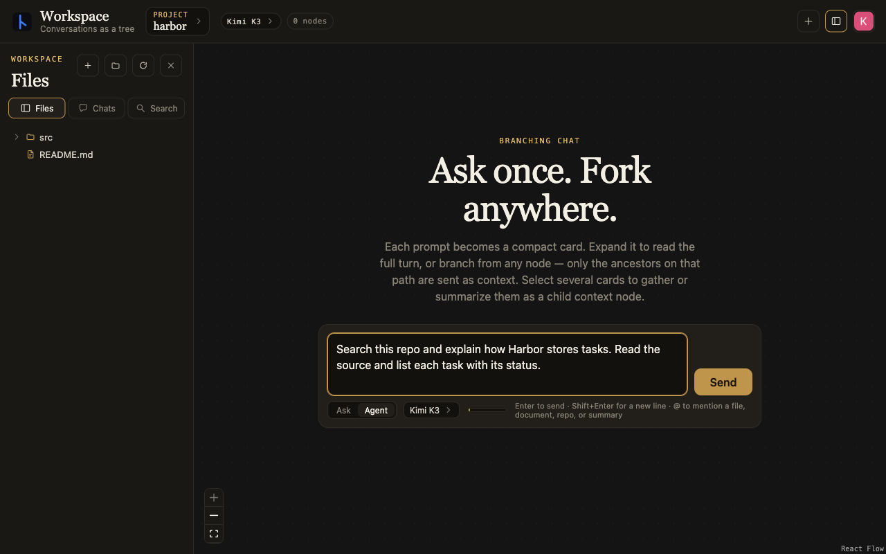
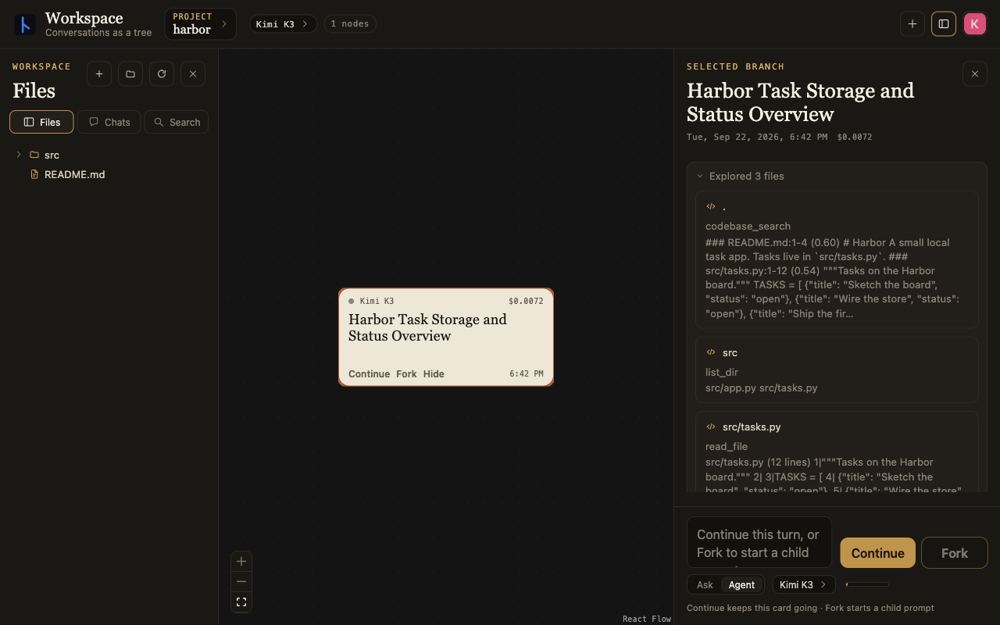
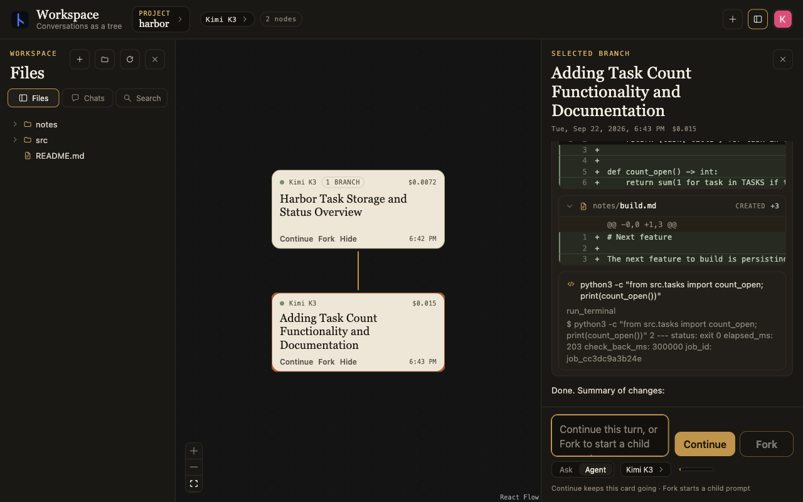
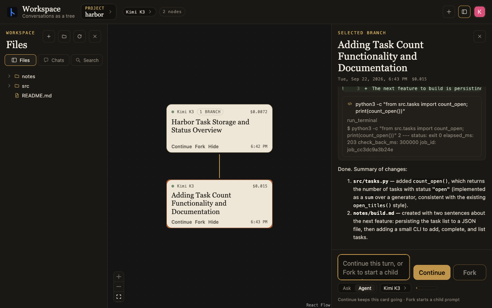
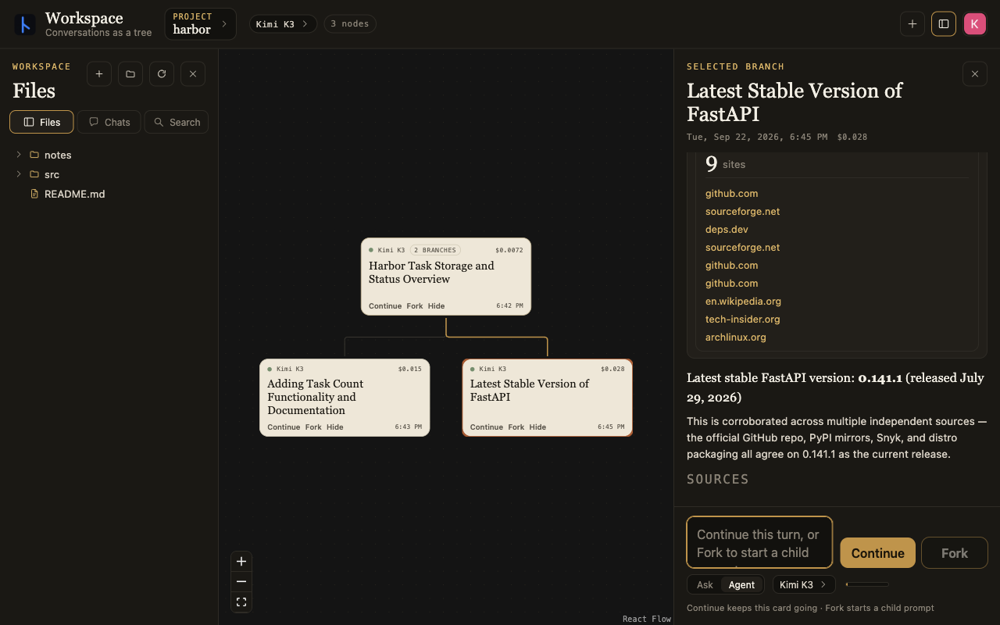
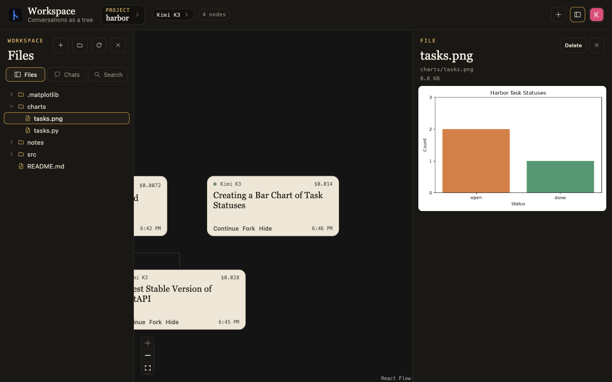
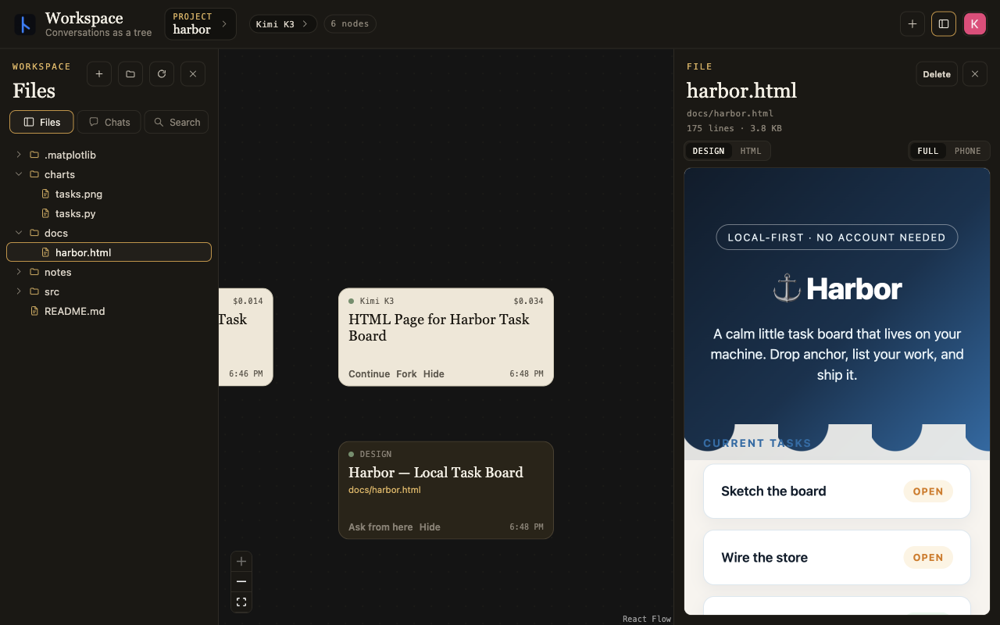

Workspace is a branching agent workspace where user prompts and agent turns are nodes in a tree, rather than a single linear transcript. You can fork from any turn and that branch's ancestors and explicit references in the prompt are sent to the model. Branching gives control over context that you can't get with a linear chat, and makes it easier to research and explore different solutions without fear of poisoning the context.
These screenshots follow a small task app called Harbor. The first prompt asks the agent to search the repo and explain how it stores tasks. Click any image to see it full size.
{kind=link}

Context and branches
Workspace maintains embeddings for documents, code and chats in the project so agents can find information outside their branch and build on common goals. Here the agent searches the repo and reads the task code. Opening the card shows the tool calls and response.
{kind=link}

Forking starts a child turn with the context up to that point. The next branch adds a function to count open tasks and writes notes about what to build next. Agents can also spawn subagents with the same branching context logic.
Working on files
Each project has its own working directory, shared across branches. Agents can search, write and edit documents and code, execute code and run commands, and read/write to GitHub. Branching separates the conversation, not the files. An edit on one branch is still an edit to the shared project.
{kind=link}

{kind=link}

A separate branch can go off and research something else. Here it searches the web for the latest FastAPI release. That conversation doesn't become part of the code-editing branch's history unless you explicitly bring it in.
{kind=link}

Charts and documents
The outputs are files in the project too. An agent can run code to produce a chart or write an HTML page, and you can open either beside the conversation. Here it charts the task statuses and makes an HTML page for Harbor.
{kind=link}

{kind=link}

The project is split into a UI library, an open-source local app you can point at a directory like VS Code or Cursor, and a closed-source app that hosts cloud agents for long-running tasks you can access from multiple devices.